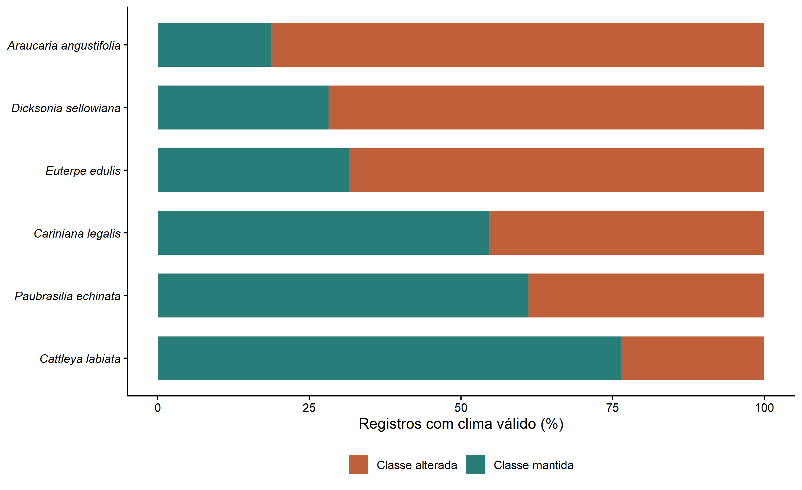
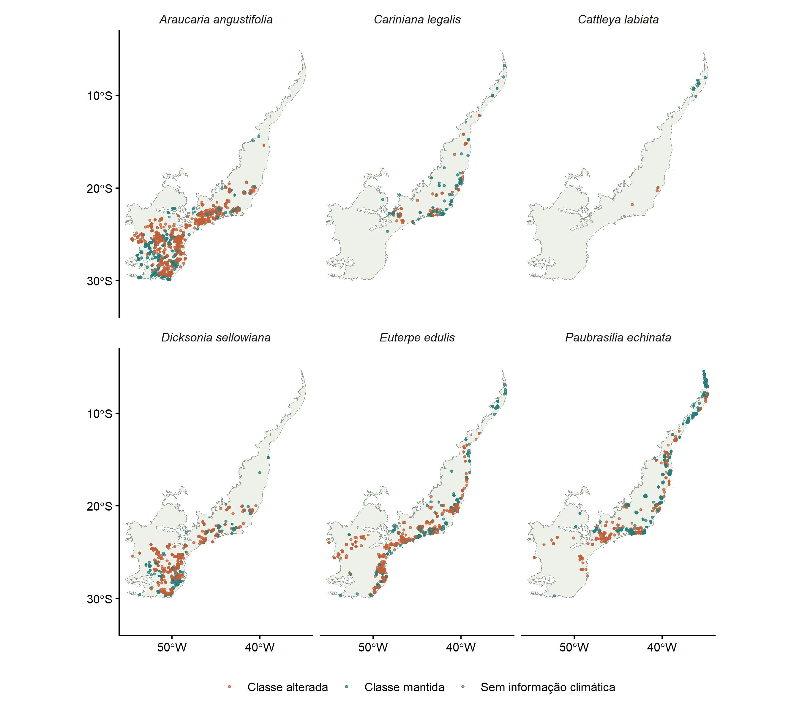

Infelizmente, este é apenas um exercício prático de compartilhamento de dados. Os resultados apresentados a seguir não devem ser considerados conclusivos e estão longe de constituir evidências suficientes de um padrão ecológico, devido a diferentes limitações estatísticas, metodológicas e relacionadas ao desenvolvimento da análise.
As localidades registradas para seis espécies da Mata Atlântica permanecem na mesma classe de Köppen–Geiger sob o clima projetado para o final do século?
A análise parte das ocorrências que receberam o bioma Mata Atlântica na etapa 3. A etapa 4 descreve sua base temporal e os contrastes de documentação entre biomas; aqui, o foco passa das séries de registros para o clima das localidades. Comparamos 1991–2020 e 2071–2099, sob SSP5-8.5, com os mapas de Beck et al. (2023).
O resultado mede a exposição dos locais documentados à mudança de classe climática. Não estima a área de distribuição das espécies, sua abundância ou sua probabilidade de extinção. O cenário representa uma trajetória específica; não é uma previsão única do clima futuro.
A matriz original da etapa 3 preservava gbifID e
scientificName, mas descartava species. Nesta
reconstrução, os nomes foram recuperados de
Br_01_clean2.csv pelo gbifID, sem criar
ocorrências adicionais. A nova versão da etapa 3 passa a conservar essa
coluna. A cópia portátil desse recorte está em
data/ocorrencias_alvo_etapa03.rds.
amostra <- d |>
group_by(species) |>
summarise(registros=n(),sem_ano=sum(is.na(year)),
anos=if(all(is.na(year))) "Não informado" else paste(range(year,na.rm=TRUE),collapse="–"),
.groups="drop")
tab(amostra,col.names=c("Espécie","Registros","Sem ano","Intervalo de anos"))| Espécie | Registros | Sem ano | Intervalo de anos |
|---|---|---|---|
| Araucaria angustifolia | 2534 | 0 | 2000–2026 |
| Cariniana legalis | 220 | 0 | 2000–2026 |
| Cattleya labiata | 17 | 0 | 2002–2026 |
| Dicksonia sellowiana | 678 | 0 | 2000–2026 |
| Euterpe edulis | 4038 | 0 | 2000–2026 |
| Paubrasilia echinata | 930 | 0 | 2000–2026 |
Foram recuperados 8.417 registros. A validação das coordenadas excluiu 0 registros. A seleção climática não repete o filtro temporal da etapa 4: inclui os tipos de registro conservados na limpeza e admite ano ausente. Coordenadas históricas são tratadas como locais documentados, não como confirmação de ocupação atual.
Os arquivos utilizados têm resolução de 30 segundos de
arco (0,008333…°, aproximadamente 1 km). O projeto
inclui cópias integrais dos dois rasters globais de origem, sem recorte
ou reamostragem. Essa escolha conserva também a referência exata da
grade para coordenadas situadas nos limites das células.
Antes da extração, o código verifica se os rasters têm o mesmo
sistema de coordenadas, extensão e resolução. Cada ponto recebe a classe
da célula correspondente, sem interpolação. Valores fora dos códigos
1–30 são tratados como ausência de informação. A legenda é lida no
formato original código: símbolo.
tab(data.frame(
Periodo=c("1991–2020","2071–2099"),
Cenario=c("Referência histórica","SSP5-8.5"),
Resolucao_graus=c(terra::res(z$atual)[1],terra::res(z$futuro)[1])
), digits=7)| Periodo | Cenario | Resolucao_graus |
|---|---|---|
| 1991–2020 | Referência histórica | 0.0083333 |
| 2071–2099 | SSP5-8.5 | 0.0083333 |
calcular05 <- function() {
p <- caminho("data","kg_1991_2020_30s.tif")
f <- caminho("data","kg_2071_2099_ssp585_30s.tif")
if (!all(file.exists(c(p,f)))) stop("Faltam os dois rasters globais em data/.")
atual <- terra::rast(p); futuro <- terra::rast(f)
terra::compareGeom(atual,futuro,stopOnError=TRUE)
stopifnot(terra::nlyr(atual)==1L,terra::nlyr(futuro)==1L,
all(abs(terra::res(atual)-1/120)<1e-7))
linhas <- readLines(caminho("data","legend.txt"),warn=FALSE,encoding="UTF-8")
pat <- "^\\s*([0-9]+):\\s+([A-Za-z]+)\\s+.*$"
linhas <- linhas[grepl(pat,linhas,perl=TRUE)]
legenda <- data.frame(codigo=as.integer(sub(pat,"\\1",linhas,perl=TRUE)),
simbolo=sub(pat,"\\2",linhas,perl=TRUE))
stopifnot(nrow(legenda)==30L,setequal(legenda$codigo,1:30),!anyDuplicated(legenda$codigo))
d <- as.data.frame(readRDS(caminho("data","ocorrencias_alvo_etapa03.rds")))
exigidas <- c("gbifID","species","bioma","decimalLongitude","decimalLatitude")
if(!all(exigidas %in% names(d))) stop("Colunas ausentes: ",paste(setdiff(exigidas,names(d)),collapse=", "))
if(anyNA(d$bioma) || any(d$bioma != "Mata Atlântica")) stop("A entrada contem registros de outro bioma.")
# Compatibilidade explicita com o nome historico usado no documento anterior.
d$nome_original <- d$species
d$species[d$species=="Caesalpinia echinata"] <- "Paubrasilia echinata"
alvos <- c("Araucaria angustifolia","Cariniana legalis","Cattleya labiata",
"Dicksonia sellowiana","Euterpe edulis","Paubrasilia echinata")
if (any(!d$species %in% alvos)) stop("Especie fora da lista de estudo.")
n_origem <- nrow(d)
coordenadas_validas <- with(d,is.finite(decimalLongitude)&is.finite(decimalLatitude)&
abs(decimalLongitude)<=180&abs(decimalLatitude)<=90)
auditoria <- d[!coordenadas_validas, c("gbifID","species")]
salvar_csv(auditoria,"05_coordenadas_invalidas.csv")
d <- d[coordenadas_validas,]
if(!nrow(d)) stop("Nenhum registro com coordenadas validas.")
pontos <- sf::st_as_sf(d,coords=c("decimalLongitude","decimalLatitude"),crs=4326,remove=FALSE)
pontos <- sf::st_transform(pontos,terra::crs(atual))
xy <- sf::st_coordinates(pontos)
# Matriz de coordenadas: extract devolve a camada, sem a coluna ID de SpatVector.
d$kg_atual <- as.integer(terra::extract(atual,xy)[[1]])
d$kg_futuro <- as.integer(terra::extract(futuro,xy)[[1]])
d$kg_atual[!d$kg_atual %in% 1:30] <- NA_integer_
d$kg_futuro[!d$kg_futuro %in% 1:30] <- NA_integer_
d$celula <- terra::cellFromXY(atual,xy)
d$classe_atual <- legenda$simbolo[match(d$kg_atual,legenda$codigo)]
d$classe_futura <- legenda$simbolo[match(d$kg_futuro,legenda$codigo)]
d$situacao <- ifelse(is.na(d$kg_atual)|is.na(d$kg_futuro),"Sem informação climática",
ifelse(d$kg_atual==d$kg_futuro,"Classe mantida","Classe alterada"))
resumir <- function(x) {
r <- lapply(alvos,function(s) {
a <- x[x$species==s,,drop=FALSE]
validos <- sum(a$situacao!="Sem informação climática")
muda <- sum(a$situacao=="Classe alterada")
data.frame(species=s,total=nrow(a),validos=validos,sem_clima=nrow(a)-validos,
mantidos=sum(a$situacao=="Classe mantida"),alterados=muda,
percentual=if(validos>0)100*muda/validos else NA_real_)
})
do.call(rbind,r)
}
resumo <- resumir(d)
# Uma observacao por especie e celula, apenas onde ha clima nos dois periodos.
validos <- d[d$situacao!="Sem informação climática",]
celulas <- validos[!duplicated(validos[c("species","celula")]),]
resumo_celulas <- resumir(celulas)
if("coordinateUncertaintyInMeters" %in% names(d)) {
u <- suppressWarnings(as.numeric(d$coordinateUncertaintyInMeters))
precisos <- resumir(d[!is.na(u)&u>=0&u<=1000,])
incerteza <- data.frame(species=alvos,
sem_incerteza=vapply(alvos,function(s)sum(d$species==s & is.na(u)),integer(1)),
acima_1km=vapply(alvos,function(s)sum(d$species==s & !is.na(u) & u>1000),integer(1)))
} else { precisos <- NULL; incerteza <- NULL }
transicoes <- as.data.frame(dplyr::count(validos,species,classe_atual,classe_futura,name="registros"))
transicoes$percentual <- 100*transicoes$registros/resumo$validos[match(transicoes$species,resumo$species)]
transicoes <- transicoes[order(transicoes$species,-transicoes$registros),]
sensibilidade <- merge(resumo[c("species","validos","percentual")],
resumo_celulas[c("species","validos","percentual")],by="species",suffixes=c("_registros","_celulas"))
sensibilidade$diferenca_pp <- sensibilidade$percentual_celulas-sensibilidade$percentual_registros
salvar_csv(resumo,"05_resumo_especies.csv")
salvar_csv(transicoes,"05_transicoes_climaticas.csv")
salvar_csv(sensibilidade,"05_sensibilidade_celulas.csv")
if(!is.null(precisos)) salvar_csv(precisos,"05_sensibilidade_incerteza_1km.csv")
if(!is.null(incerteza)) salvar_csv(incerteza,"05_incerteza_coordenadas.csv")
salvar_csv(d,"05_ocorrencias_com_clima.csv")
espacial <- sf::st_as_sf(d,coords=c("decimalLongitude","decimalLatitude"),crs=4326,remove=FALSE)
sf::st_write(espacial,caminho("resultados","05_ocorrencias_clima.gpkg"),layer="ocorrencias",delete_layer=TRUE,quiet=TRUE)
list(dados=d,resumo=resumo,celulas=celulas,sensibilidade=sensibilidade,
precisos=precisos,incerteza=incerteza,transicoes=transicoes,legenda=legenda,
n_origem=n_origem,n_invalidas=nrow(auditoria),atual=atual,futuro=futuro)
}
O percentual de alteração usa como denominador apenas os registros com classe válida no presente e no futuro. Os demais permanecem na tabela de controle e no arquivo de ocorrências; não são classificados como estáveis.
tab(r,col.names=c("Espécie","Total","Clima válido","Sem clima","Mantidos","Alterados","Alteração (%)"))| Espécie | Total | Clima válido | Sem clima | Mantidos | Alterados | Alteração (%) |
|---|---|---|---|---|---|---|
| Araucaria angustifolia | 2534 | 2534 | 0 | 472 | 2062 | 81.37 |
| Cariniana legalis | 220 | 220 | 0 | 120 | 100 | 45.45 |
| Cattleya labiata | 17 | 17 | 0 | 13 | 4 | 23.53 |
| Dicksonia sellowiana | 678 | 678 | 0 | 191 | 487 | 71.83 |
| Euterpe edulis | 4038 | 4037 | 1 | 1274 | 2763 | 68.44 |
| Paubrasilia echinata | 930 | 921 | 9 | 563 | 358 | 38.87 |
Há informação climática nos dois períodos para 8.407 de 8.417 registros (99,9%). Os 10 registros restantes não entram no cálculo dos percentuais.
barras <- bind_rows(
r |> transmute(species,situacao="Classe mantida",percentual=100*mantidos/ifelse(validos>0,validos,NA)),
r |> transmute(species,situacao="Classe alterada",percentual=100*alterados/ifelse(validos>0,validos,NA)))
barras$species <- factor(barras$species,levels=r$species[order(r$percentual)])
ggplot(barras,aes(species,percentual,fill=situacao)) + geom_col(width=.7) + coord_flip() +
scale_fill_manual(values=c("Classe mantida"="#287d79","Classe alterada"="#bf603b")) +
scale_y_continuous(limits=c(0,100),breaks=seq(0,100,25)) +
labs(x=NULL,y="Registros com clima válido (%)",fill=NULL) + tema() +
theme(axis.text.y=element_text(face="italic"))
Proporção de registros com manutenção ou alteração da classe climática. O denominador de cada espécie aparece na tabela de cobertura; registros sem informação climática não entram nas barras.
A maior proporção de alteração ocorre em Araucaria angustifolia: 81,4% dos seus 2.534 registros com clima válido. No outro extremo, Cattleya labiata apresenta 23,5%, calculados sobre 17 registros. A diferença indica exposição desigual entre as localidades representadas para essas espécies, sem estabelecer, por si só, uma ordem de vulnerabilidade biológica.
Uma proporção elevada aponta para a necessidade de examinar o clima das populações documentadas com maior detalhe. Entretanto, a resposta de cada espécie também depende de tolerâncias fisiológicas, dispersão, microclima e condições do habitat. A manutenção da classe tampouco implica clima constante: temperatura e precipitação podem variar sem ultrapassar os limites da classificação.
limite <- readRDS(caminho("data","biomas_2025.rds")) |>
st_transform(5880) |> st_simplify(dTolerance=1000,preserveTopology=TRUE) |> st_transform(4326)
limite <- limite[limite$name_biome=="Mata Atlântica",]
ggplot() + geom_sf(data=limite,fill="#eef1e9",color="#879488",linewidth=.2) +
geom_point(data=d,aes(decimalLongitude,decimalLatitude,color=situacao),size=.65,alpha=.65) +
facet_wrap(~species,ncol=3) +
scale_color_manual(values=c("Classe mantida"="#287d79","Classe alterada"="#bf603b",
"Sem informação climática"="#777777"),drop=FALSE) +
coord_sf(xlim=c(-56,-34),ylim=c(-34,-3),expand=FALSE) +
scale_x_continuous(breaks=c(-50,-40)) + scale_y_continuous(breaks=c(-30,-20,-10)) +
labs(x=NULL,y=NULL,color=NULL) + tema() + theme(strip.text=element_text(face="italic"))
Localidades documentadas na Mata Atlântica, classificadas pela mudança climática projetada. Pontos sobrepostos podem ocultar a repetição de registros.
O mapa permite localizar concentrações de registros expostos e reconhecer áreas pouco representadas. Uma concentração de pontos não demonstra maior densidade populacional, pois a base reúne amostragens heterogêneas. Da mesma forma, espaços sem pontos não comprovam ausência da espécie.
principais <- z$transicoes |>
filter(classe_atual!=classe_futura) |>
group_by(species) |> slice_max(registros,n=3,with_ties=FALSE) |> ungroup()
tab(principais,col.names=c("Espécie","Classe atual","Classe futura","Registros","% dos registros válidos"))| Espécie | Classe atual | Classe futura | Registros | % dos registros válidos |
|---|---|---|---|---|
| Araucaria angustifolia | Cfb | Cfa | 1415 | 55.84 |
| Araucaria angustifolia | Cfa | Af | 179 | 7.06 |
| Araucaria angustifolia | Cfa | Am | 135 | 5.33 |
| Cariniana legalis | Cfa | Aw | 36 | 16.36 |
| Cariniana legalis | Af | Aw | 12 | 5.45 |
| Cariniana legalis | Cwa | Aw | 12 | 5.45 |
| Cattleya labiata | Am | Aw | 2 | 11.76 |
| Cattleya labiata | Cfa | Aw | 1 | 5.88 |
| Cattleya labiata | Cwa | Aw | 1 | 5.88 |
| Dicksonia sellowiana | Cfb | Cfa | 371 | 54.72 |
| Dicksonia sellowiana | Cfa | Af | 46 | 6.78 |
| Dicksonia sellowiana | Cfa | Aw | 12 | 1.77 |
| Euterpe edulis | Cfb | Cfa | 1819 | 45.06 |
| Euterpe edulis | Cfa | Af | 376 | 9.31 |
| Euterpe edulis | Am | Af | 183 | 4.53 |
| Paubrasilia echinata | Am | Aw | 88 | 9.55 |
| Paubrasilia echinata | Af | Aw | 87 | 9.45 |
| Paubrasilia echinata | Cfa | Aw | 38 | 4.13 |
A combinação espécie–transição com mais registros é Cfb → Cfa em Euterpe edulis, com 1.819 registros. Essa frequência se refere ao conjunto amostrado e pode ser influenciada pela repetição de localidades.
As letras representam categorias climáticas, não uma escala linear de deterioração ambiental. A tabela identifica quais mudanças merecem investigação, mas não quantifica diretamente o aquecimento, a alteração da precipitação ou a adequação do habitat. Essas perguntas exigem examinar as variáveis climáticas contínuas que sustentam a classificação (Beck et al., 2023).
Ocorrências da mesma espécie podem ocupar a mesma célula e, portanto, repetir a mesma comparação climática. A análise abaixo conserva uma observação por espécie e célula com clima válido. Ela reduz o peso da repetição dentro da grade, mas não corrige lacunas de amostragem ou autocorrelação entre células vizinhas.
tab(z$sensibilidade,col.names=c("Espécie","Registros válidos","Alteração por registros (%)",
"Células válidas","Alteração por células (%)","Diferença (p.p.)"))| Espécie | Registros válidos | Alteração por registros (%) | Células válidas | Alteração por células (%) | Diferença (p.p.) |
|---|---|---|---|---|---|
| Araucaria angustifolia | 2534 | 81.37 | 1461 | 77.75 | -3.62 |
| Cariniana legalis | 220 | 45.45 | 176 | 43.75 | -1.70 |
| Cattleya labiata | 17 | 23.53 | 16 | 25.00 | 1.47 |
| Dicksonia sellowiana | 678 | 71.83 | 444 | 69.82 | -2.01 |
| Euterpe edulis | 4037 | 68.44 | 650 | 66.92 | -1.52 |
| Paubrasilia echinata | 921 | 38.87 | 550 | 41.09 | 2.22 |
A maior diferença entre as duas formas de contagem ocorre em Araucaria angustifolia: de 81,4% por registro para 77,8% por célula, uma diferença de -3,6 pontos percentuais. Esse contraste mostra quanto o resultado depende da distribuição dos registros entre as células ocupadas.
Uma coordenada com incerteza superior à dimensão aproximada da célula pode representar locais com classes diferentes. Por isso, apresentamos uma análise adicional restrita aos registros com incerteza declarada entre 0 e 1.000 m. O valor zero é mantido conforme informado na base, sem ser interpretado como prova de localização exata. Registros sem estimativa de incerteza não entram nesse subconjunto.
if(!is.null(z$incerteza)) tab(z$incerteza,col.names=c("Espécie","Incerteza não informada","Incerteza > 1 km"))| Espécie | Incerteza não informada | Incerteza > 1 km |
|---|---|---|
| Araucaria angustifolia | 695 | 280 |
| Cariniana legalis | 132 | 83 |
| Cattleya labiata | 10 | 7 |
| Dicksonia sellowiana | 469 | 209 |
| Euterpe edulis | 3559 | 475 |
| Paubrasilia echinata | 592 | 332 |
if(!is.null(z$precisos)) tab(z$precisos,col.names=c("Espécie","Total ≤ 1 km","Clima válido","Sem clima","Mantidos","Alterados","Alteração (%)"))| Espécie | Total ≤ 1 km | Clima válido | Sem clima | Mantidos | Alterados | Alteração (%) |
|---|---|---|---|---|---|---|
| Araucaria angustifolia | 1559 | 1559 | 0 | 280 | 1279 | 82.04 |
| Cariniana legalis | 5 | 5 | 0 | 5 | 0 | 0.00 |
| Cattleya labiata | 0 | 0 | 0 | 0 | 0 | NA |
| Dicksonia sellowiana | 0 | 0 | 0 | 0 | 0 | NA |
| Euterpe edulis | 4 | 4 | 0 | 0 | 4 | 100.00 |
| Paubrasilia echinata | 6 | 6 | 0 | 6 | 0 | 0.00 |
Percentuais baseados em poucos registros são sensíveis à inclusão ou exclusão de poucas localidades. Isso é especialmente relevante para espécies menos representadas neste conjunto. A análise de sensibilidade não substitui a revisão das coordenadas nem comprova a precisão declarada.
No subconjunto com incerteza declarada de até 1 km, há menos de dez registros válidos para Cariniana legalis (n = 5), Cattleya labiata (n = 0), Dicksonia sellowiana (n = 0), Euterpe edulis (n = 4), Paubrasilia echinata (n = 6). Nesses casos, percentuais de 0% ou 100% não demonstram estabilidade ou alteração generalizada; refletem um subconjunto insuficiente para sustentar essa interpretação. Quando n = 0, o percentual não é calculado.
Gráfico de barras
O padrão é claro e ecologicamente coerente: as espécies com maior proporção de alteração climática projetada são Araucaria angustifolia (81,4%) e Dicksonia sellowiana (71,8%), seguidas por Euterpe edulis (68,4%). No outro extremo, Paubrasilia echinata (38,9%) e Cariniana legalis (45,5%) apresentam menor exposição, enquanto Cattleya labiata (23,5%) apresenta o menor valor entre todas. No entanto, como esta última espécie possui apenas 17 registros, esse resultado apresenta baixa robustez estatística.
Esse padrão é biogeograficamente coerente: Araucaria e Dicksonia são táxons associados a climas temperados/subtropicais de altitude, especialmente do tipo Cfb, correspondente ao clima oceânico temperado úmido. A transição dominante detectada (Cfb→Cfa, isto é, de clima temperado úmido para subtropical úmido com verões quentes) corresponde ao tipo de deslocamento climático esperado sob cenários de aquecimento em regiões de maior latitude e altitude no sul do Brasil. Espécies com distribuição associada a condições mais tropicais, como Paubrasilia, presente em regiões atualmente classificadas como Aw/Am, apresentam menor proporção de mudança de classe climática por já ocorrerem em categorias climaticamente mais quentes.
Mapa de distribuição espacial
O mapa permite identificar onde essa exposição se concentra. O padrão é mais evidente nas regiões Sul e Sudeste, especialmente em áreas atualmente classificadas como Cfb, onde a transição para Cfa é mais generalizada. Em contraste, localidades já inseridas em climas tropicais Af, Am ou Aw apresentam maior proporção de pontos com manutenção da classe climática.
Esse resultado sugere a existência de um gradiente latitudinal e altitudinal de exposição às mudanças climáticas, em vez de uma resposta homogênea ao longo de toda a Mata Atlântica. . # Produtos e rastreabilidade
O código salva o resumo por espécie, as transições, as análises de
sensibilidade e as ocorrências com clima na pasta
resultados/. A versão espacial é
05_ocorrencias_clima.gpkg. O site oferece apenas as tabelas
sintéticas em Resultados; as entradas
compactas e o código acompanham o projeto.
## R version 4.4.1 (2024-06-14 ucrt)
## Platform: x86_64-w64-mingw32/x64
## Running under: Windows 11 x64 (build 26200)
##
## Matrix products: default
##
##
## locale:
## [1] LC_COLLATE=Portuguese_Brazil.utf8 LC_CTYPE=Portuguese_Brazil.utf8
## [3] LC_MONETARY=Portuguese_Brazil.utf8 LC_NUMERIC=C
## [5] LC_TIME=Portuguese_Brazil.utf8
##
## time zone: America/Sao_Paulo
## tzcode source: internal
##
## attached base packages:
## [1] stats graphics grDevices utils datasets methods base
##
## other attached packages:
## [1] leaflet_2.2.3 sf_1.1-0 dplyr_1.1.4 ggplot2_4.0.3
##
## loaded via a namespace (and not attached):
## [1] sass_0.4.9 utf8_1.2.4 generics_0.1.3 class_7.3-22
## [5] KernSmooth_2.23-24 digest_0.6.36 magrittr_2.0.3 evaluate_0.24.0
## [9] grid_4.4.1 RColorBrewer_1.1-3 nanoarrow_0.8.0 rnaturalearth_1.2.0
## [13] fastmap_1.2.0 jsonlite_1.8.8 e1071_1.7-14 DBI_1.2.3
## [17] fansi_1.0.6 crosstalk_1.2.1 viridisLite_0.4.2 scales_1.4.0
## [21] codetools_0.2-20 jquerylib_0.1.4 cli_3.6.3 rlang_1.1.4
## [25] units_0.8-5 withr_3.0.0 cachem_1.1.0 yaml_2.3.12
## [29] geobr_2.0.1 tools_4.4.1 geoarrow_0.4.2 curl_5.2.1
## [33] vctrs_0.6.5 R6_2.5.1 proxy_0.4-27 lifecycle_1.0.5
## [37] classInt_0.4-10 leaflet.providers_3.0.0 htmlwidgets_1.6.4 pkgconfig_2.0.3
## [41] terra_1.9-11 pillar_1.9.0 bslib_0.7.0 gtable_0.3.6
## [45] data.table_1.15.4 glue_1.7.0 Rcpp_1.0.12 xfun_0.45
## [49] tibble_3.2.1 tidyselect_1.2.1 highr_0.11 rstudioapi_0.16.0
## [53] knitr_1.48 farver_2.1.2 htmltools_0.5.8.1 rmarkdown_2.27
## [57] labeling_0.4.3 wk_0.9.2 compiler_4.4.1 S7_0.2.1Beck, H. E., McVicar, T. R., Vergopolan, N., Berg, A., Lutsko, N. J., Dufour, A., Zeng, Z., Jiang, X., van Dijk, A. I. J. M., & Miralles, D. G. (2023). High-resolution (1 km) Köppen-Geiger maps for 1901–2099 based on constrained CMIP6 projections. Scientific Data, 10, 724. https://doi.org/10.1038/s41597-023-02549-6
Meyer, C., Weigelt, P., & Kreft, H. (2016). Multidimensional biases, gaps and uncertainties in global plant occurrence information. Ecology Letters, 19(8), 992–1006. https://doi.org/10.1111/ele.12624
Royal Botanic Gardens, Kew. (2026). Paubrasilia echinata (Lam.) Gagnon, H.C.Lima & G.P.Lewis. Plants of the World Online. Consultado em 15 de setembro de 2026, em https://powo.science.kew.org/taxon/urn:lsid:ipni.org:names:77158012-1. Sem DOI.